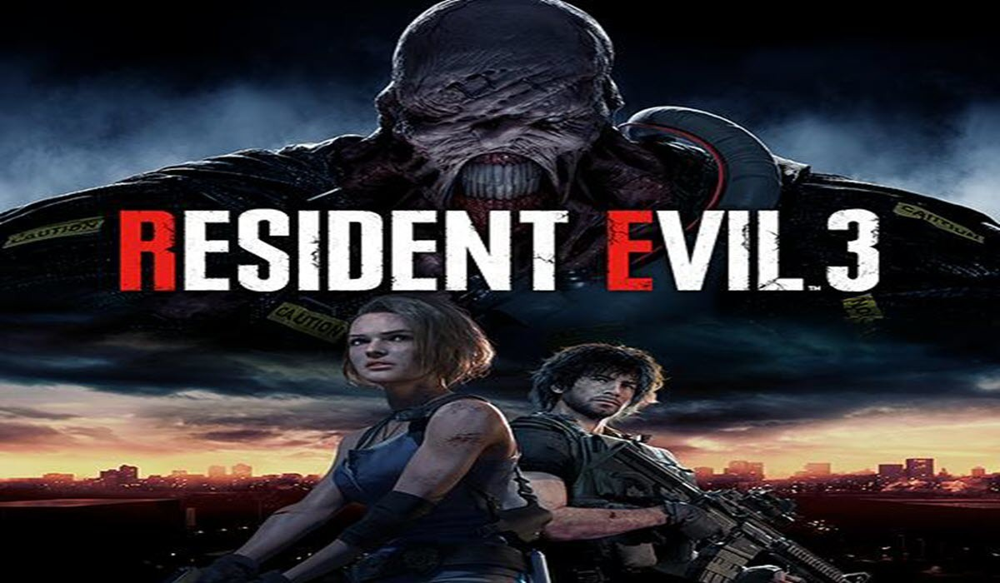

Resident Evil 3
imagem do jogo Resident Evil 3
Resident Evil 3: Nemesis, conhecido no Japão como Biohazard 3: Last Escape (バイオハザード3 ラストエスケープ Baiohazādo 3 Rasuto Esukēpu?), é um jogo eletrônico de survival horror desenvolvido e publicado pela Capcom, lançado originalmente para o PlayStation em 1999. É o terceiro jogo da franquia Resident Evil, e ocorre antes e após os acontecimentos de Resident Evil 2.
A história centra-se em Jill Valentine e em seus esforços para escapar de Raccon City, uma cidade completamente infectada com um novo tipo de arma biológica secreta desenvolvida pela empresa farmacêutica Umbrella Corporation. O jogo usa o mesmo motor que seus antecessores e apresenta modelos 3D sobre fundos pré-renderizados com ângulos de câmera fixa. Ao contrário dos jogos anteriores, Resident Evil 3: Nemesis foi projetado para ser mais orientado para a ação. Ele apresenta um maior número de inimigos para serem derrotados e introduz a criatura Nemesis, que persegue periodicamente o jogador até o final do jogo.
Resident Evil 3 foi um sucesso crítico e comercial, vendendo mais de três milhões de unidades em todo o mundo. A maioria dos críticos elogiaram os gráficos por serem detalhados e Nemesis como um vilão assustador, mas alguns criticaram a curta duração do jogo e da história. Após o seu lançamento no PlayStation, o jogo foi posteriormente portado para Dreamcast, Microsoft Windows e GameCube. Uma recriação, intitulada Resident Evil 3, foi lançada em 3 de abril de 2020 para Microsoft Windows, PlayStation 4 e Xbox One.
Resident Evil 3: Nemesis é um jogo eletrônico de survival horror onde o jogador controla o personagem na perspectiva de terceira pessoa para interagir com o ambiente e inimigos. Jill Valentine é a única protagonista e personagem principal controlável do jogo, com outro personagem também sendo controlável por um breve período.[1] Para progredir, o jogador deve explorar a cidade fictícia de Raccoon City, evitando, enganando e derrotando vários tipos de inimigos. O jogador pode abrir portas, empurrar ou escalar certos objetos e pegar itens. Todos os itens coletados são armazenados em um inventário que o jogador pode acessar a qualquer momento. Eles podem ser utilizados, examinados e combinados para fazer novos.[1] O inventário é limitado a um determinado número de espaços, e o jogador deve muitas vezes mover itens para uma caixa de armazenamento localizadas em salas especiais para gerenciar o espaço.[1]
Em combate, o jogador tem a capacidade de evitar ataques, usar armas de fogo contra os oponentes e atirar em alguns objetos como barris, fazendo-os explodir para danificar inimigos próximos. Também é possível executar um giro rápido de 180 graus para fugir dos inimigos.[2] O jogador tem uma certa quantidade de saúde, que diminui se o personagem é atacado pelas criaturas. Quanto menor a saúde, mais lentamente ele irá se locomover. No entanto, os jogadores podem aumentar a vida através da recolha e uso de ervas, que podem ser misturadas com outras ervas para aumentar o seu efeito curativo. O jogo também incorpora um sistema de criação de munição, que pode ser fabricada a partir de diferentes tipos de pólvora.[1] Além de entrar em combate, o jogador deve muitas vezes resolver inúmeros quebra-cabeças que incidem sobre desafios lógicos e conceituais.[2]
Ao contrário dos jogos anteriores da série Resident Evil, o jogador é ocasionalmente solicitado a escolher entre uma de duas ações possíveis. Essas escolhas afetam a direção do jogo e da história.[1] Além disso, uma criatura chamada Nemesis é encontrada várias vezes ao longo da campanha como um chefe recorrente. Nemesis é consideravelmente mais poderoso do que o jogador e tem a capacidade de usar um lançador de foguetes como arma, esquivar-se de projéteis e de perseguir o personagem de uma área para outra. Durante um desses encontros, o jogador pode optar por lutar com Nemesis ou fugir até que ele vá embora.